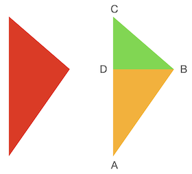
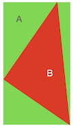

三角形绘制
Contents
三角形绘制#
本章节算法和代码引用了 Dmitry V. Sokolov 的 tinyrenderer 第二章三角形光栅化过程。在原算法的基础上，本章节做了整理、改进和重构。感谢 Dmitry V. Sokolov 将这一段算法整理成册，并开源地发布在 GitHub 供所有人使用。
在上一章节中，我们描述了基本的线段绘制的算法。线段是所有直线，射线，以及曲线的基本构成单元。对于一条曲线来说，我们可以通过利用微积分的思想，将曲线转换为一条一条细小的线段，通过控制线段的数量来控制曲线的平滑精度。而对于一个曲面来说，我们则可以通过渲染无数个细小的三角形来拟合。
我们在此章节中，将会探索在 2D 平面下的三角形渲染。在掌握了 2D 三角形渲染的方法以后，对于一个立体的 3D 图形，无非通过投影变换将三维空间转换为二维平面，然后重复这个渲染过程。
%%capture
# 执行第二章的代码，引入 draw_line 函数
%run "02-line.ipynb"
def draw_triangle_frame(img, p1, p2, p3, color):
draw_line(img, p1, p2, color)
draw_line(img, p2, p3, color)
draw_line(img, p3, p1, color)
w, h = 200, 200
img = Image.new('RGBA', (w, h), 'black')
draw_triangle_frame(img, (0.2, 0.2), (0.6, 0.6), (0.3, 0.6), (255, 0, 0, 255))
draw_triangle_frame(img, (0.2, 0.5), (0.1, 0.8), (0.2, 0.9), (0, 255, 0, 255))
display(img)

运行该程序我们就可以得到一个空心三角形。
扫描线算法#
通过线段绘制的办法，我们已经得到了一个空心的三角形。而对于实心三角形来说，一个朴素的想法是，我们从下至上，如同填色一样，一条线一条线的补全颜色，直到绘制完成整个三角形。
由于我们不断的在三角形内部从左至右扫描并填，这个算法被称之为扫描线算法。现在让我们来讨论扫描线算法的实现细节。
第一步，我们将三角形切分为上下两部分。

如上图所示，红色的三角形被经过B点的水平线，分成了上下两部分。上部分三角形由线段 AC，BC 和水平线 BD 围成，下半部分三角形则由 AC，AB 和水平线BD围成。A，B，C 三点的确定只需要根据三角形的三个端点的 y 坐标从低到高排序即可。
如果 A 和 B 处于同一水平线，y 值相等，那么我们可以认为其下半部分 ABD（或上半部分 BDC ）为空三角形，而只存在上半部分（或下半部分）三角形。
经过如此切分以后，三角形的三条线段的方程都是已知的。那么我们关注三角形 ABD，我们下往上，在线段 AD 上寻找一个点，然后做水平线，与 AB 相交，这条线段即我们的扫描线。这根扫描线明显处于三角形内部，那么我们把其经过的所有像素着色即可。
# 已知线段的两个端点，当一个点在线段上，并已知其y值，求x值
def solve_line_x(p1, p2, y):
# p1.y和p2.y应不相等，我们在扫描线循环中，规避了相等情况
assert p1[1] != p2[1]
t = (y - p1[1]) / (p2[1] - p1[1])
return t * (p2[0] - p1[0]) + p1[0]
def draw_triangle(img, p1, p2, p3, color):
# 将屏幕坐标转换到像素空间
p1i = (round(p1[0] * img.size[0]), round(p1[1] * img.size[1]))
p2i = (round(p2[0] * img.size[0]), round(p2[1] * img.size[1]))
p3i = (round(p3[0] * img.size[0]), round(p3[1] * img.size[1]))
# 将三角形三个坐标按y轴从低到高排序
if p1i[1] > p2i[1]:
p1i, p2i = p2i, p1i
if p1i[1] > p3i[1]:
p1i, p3i = p3i, p1i
if p2i[1] > p3i[1]:
p2i, p3i = p3i, p2i
# 扫描下半部分三角形，如果三角形水平，p1i.y == p2i.y, 则该循环被跳过
for y in range(p1i[1], p2i[1]):
x_min = solve_line_x(p1i, p3i, y) / img.size[0]
x_max = solve_line_x(p1i, p2i, y) / img.size[0]
y = y / img.size[1]
draw_line(img, (x_min, y), (x_max, y), color)
# 扫描上半部分三角形，如果三角形水平，p2i.y == p3i.y, 则该循环被跳过
for y in range(p2i[1], p3i[1]):
x_min = solve_line_x(p1i, p3i, y) / img.size[0]
x_max = solve_line_x(p2i, p3i, y) / img.size[0]
y = y / img.size[1]
draw_line(img, (x_min, y), (x_max, y), color)
w, h = 200, 200
img = Image.new('RGBA', (w, h), 'black')
draw_triangle(img, (0.2, 0.2), (0.6, 0.6), (0.3, 0.6), (255, 0, 0, 255))
draw_triangle(img, (0.2, 0.5), (0.1, 0.8), (0.2, 0.9), (0, 255, 0, 255))
display(img)
包围盒测试算法#
扫描线算法是一个非常老牌的算法，其不仅用于三角形绘制，同时还被大量应用于计算几何中。扫描线算法被大量应用于曾经的单线程 CPU 架构中，然而随着 GPU 的发展，带来了数千 GPU 线程同时绘制图形的方案，一个更适合多线程的包围盒测试算法应运而生。
我们用一张图片来解释包围盒测试：

如图所示，绿色的长方形是红色三角形的包围盒。包围盒是这样一个长方形，其长和宽于x轴和y轴平行，并且其刚刚好围住了内部的三角形。很显然，包围盒的最小或最大x值是三角形三个端点中最小或最大的x，同理y也是如此。
如果一个点处于包围盒之外，很显然它一定处于三角形之外。而一个处于包围盒之内的点，则有可能出现在三角形之内（B 点），或出现在三角形之外（A 点）。
因此，我们仅仅只需遍历包围盒中的所有像素，并测试其是否在三角形之内，如果之内，则着色，否则则跳过该像素。
首先我们来绘制包围盒子：
def is_in_triangle(p1, p2, p3, p):
# 因为我们要绘制包围盒，所以我们姑且认为包围盒中的点都属于三角形
return True
def draw_triangle(img, p1, p2, p3, color):
# 将屏幕坐标转换到像素空间
p1i = (round(p1[0] * img.size[0]), round(p1[1] * img.size[1]))
p2i = (round(p2[0] * img.size[0]), round(p2[1] * img.size[1]))
p3i = (round(p3[0] * img.size[0]), round(p3[1] * img.size[1]))
# 找到包围盒左下和右上两个端点
p_min = (min(p1i[0], p2i[0], p3i[0]), min(p1i[1], p2i[1], p3i[1]))
p_max = (max(p1i[0], p2i[0], p3i[0]), max(p1i[1], p2i[1], p3i[1]))
for x in range(p_min[0], p_max[0]+1):
for y in range(p_min[1], p_max[1]+1):
p = (x / img.size[0], y / img.size[1])
if is_in_triangle(p1, p2, p3, p):
img.putpixel((x, img.size[1]-y), color)
w, h = 200, 200
img = Image.new('RGBA', (w, h), 'black')
draw_triangle(img, (0.2, 0.2), (0.6, 0.6), (0.3, 0.6), (255, 0, 0, 255))
draw_triangle(img, (0.2, 0.5), (0.1, 0.8), (0.2, 0.9), (0, 255, 0, 255))
display(img)
上诉代码成功绘制了绿色三角形和红色三角形的包围盒。现在我们来实现is_in_triangle算法，测试属于包围盒的点，是否同时也属于三角形。
在这里我们引入重心坐标系。在数学中，重心坐标是由单形（如三角形或四面体等）顶点定义的坐标。重心坐标是齐次坐标的一种。
假设三角形的三个顶点为 \(A\), \(B\), \(C\)。那么点 \(P\) 可以表示为：
则 \((i, u, v)\) 为点 \(P\) 的重心坐标。并且如果 \(i\), \(u\), \(v\) 其中任何一个值小于 0，那么点 \(P\) 则落在三角形外部。
我们令 \(i=1-u-v\) , 则
整理可得
我们把坐标进行分解，并且用矩阵表示则有
一个有趣的事实是，向量 \((u, v, 1)\) 同时与两个向量垂直（内积为 0），很显然，向量 \((u, v, 1)\) 与这两个向量的叉积（Cross Product）平行。
我们用numpy来帮助我们计算向量的叉积：
import numpy as np
def is_in_triangle(a, b, c, p):
v1 = np.array([b[0]-a[0], c[0]-a[0], a[0]-p[0]])
v2 = np.array([b[1]-a[1], c[1]-a[1], a[1]-p[1]])
v3 = np.cross(v1, v2)
# 将最后一位设为1
v3 /= v3[2]
i, u, v = 1-v3[0]-v3[1], v3[0], v3[1]
return not(i < 0 or u < 0 or v < 0)
将这一段测试函数和原先的绘制函数组合一起则有：
def draw_triangle(img, p1, p2, p3, color):
# 将屏幕坐标转换到像素空间
p1i = (round(p1[0] * img.size[0]), round(p1[1] * img.size[1]))
p2i = (round(p2[0] * img.size[0]), round(p2[1] * img.size[1]))
p3i = (round(p3[0] * img.size[0]), round(p3[1] * img.size[1]))
# 找到包围盒左下和右上两个端点
p_min = (min(p1i[0], p2i[0], p3i[0]), min(p1i[1], p2i[1], p3i[1]))
p_max = (max(p1i[0], p2i[0], p3i[0]), max(p1i[1], p2i[1], p3i[1]))
for x in range(p_min[0], p_max[0]+1):
for y in range(p_min[1], p_max[1]+1):
p = (x / img.size[0], y / img.size[1])
if is_in_triangle(p1, p2, p3, p):
img.putpixel((x, img.size[1]-y), color)
w, h = 200, 200
img = Image.new('RGBA', (w, h), 'black')
draw_triangle(img, (0.2, 0.2), (0.6, 0.6), (0.3, 0.6), (255, 0, 0, 255))
draw_triangle(img, (0.2, 0.5), (0.1, 0.8), (0.2, 0.9), (0, 255, 0, 255))
display(img)
至此，我们便利用包围盒优化和三角形测试算法，绘制出了我们想要的三角形。